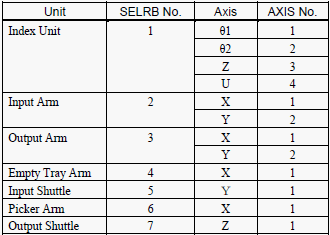
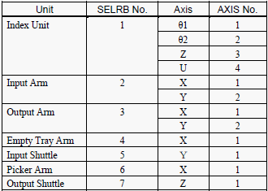

|
Dip switch to initialise encoder
|
Robot Number and Axis Number  |
Service History
Subject: After output shuttle motor replacement, SPEL motor status show ???
Handler Model: TR60 (S/N:121175) NEC
Controller: RC520 ( S/N: 01-20947) 3 DU
Date: 20 Nov 2008
Symptom
After output shuttle motor replacement, SPEL motor status show ???.
Action
Phone support on output shuttle motor replacement.
Advise customer to reset encoder in DU as customer feedback after motor replacement in SPEL motor status show ??? and also require to calibrate motor back to pulse 0 position.
|
Dip switch to initialise encoder
|
Robot Number and Axis Number  |
PG #1(Hand A and B up/down for Input & Output Hands)
PG #2(For Soak Robot 8, 9, 10 & 11)
KA1 : For robot 10 (Input-side Soak Buffer; moving top-middle-bottom)
KA2 : For Robot 11 (Chamber Soak Buffer Up/Down)
KA3 : For Robot 8 (Upper Soak Boat Transportation; moving from test to in buffer)
KA4 : For Robot 9 (Lower Soak Boat Transportation; moving from in buffer to bottom test)
Cause
Encoder was not reset after motor replacement caused SPEL motor status to show ???.